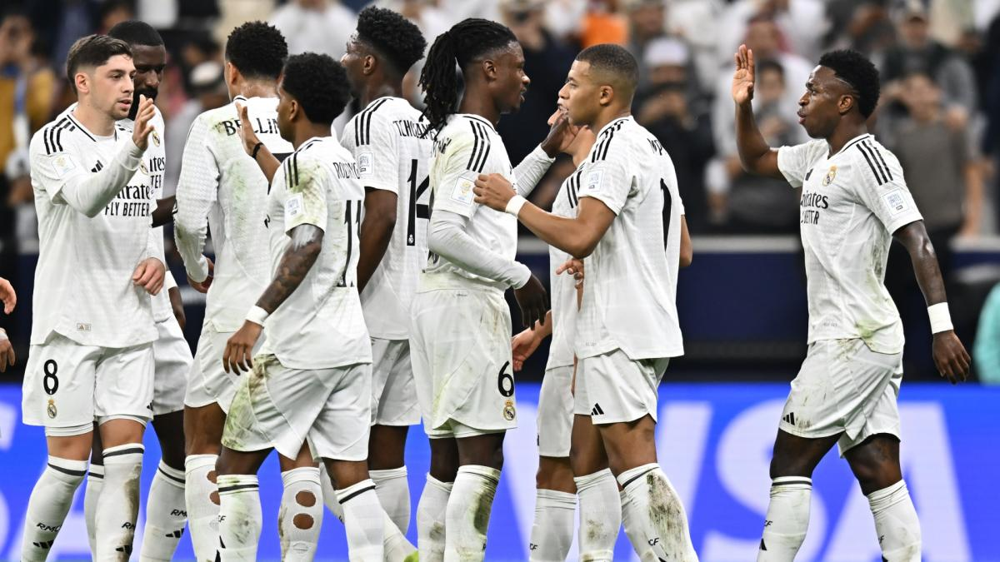
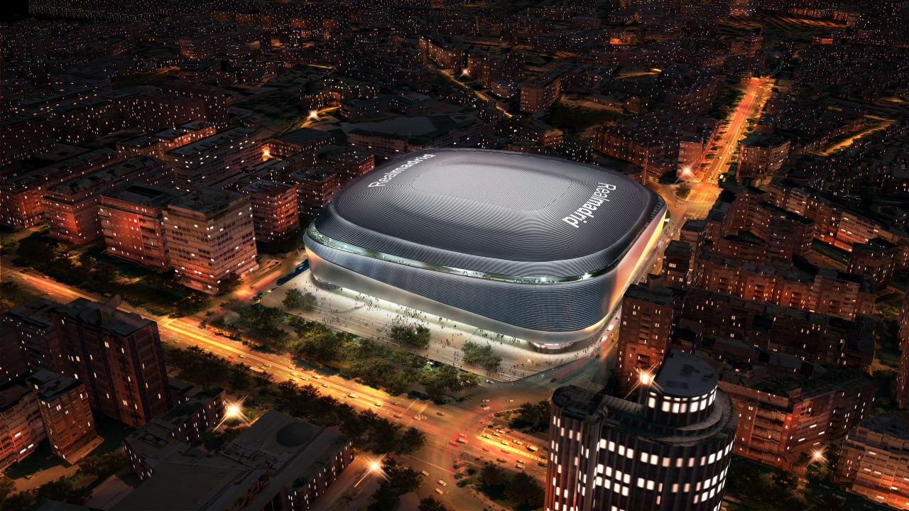
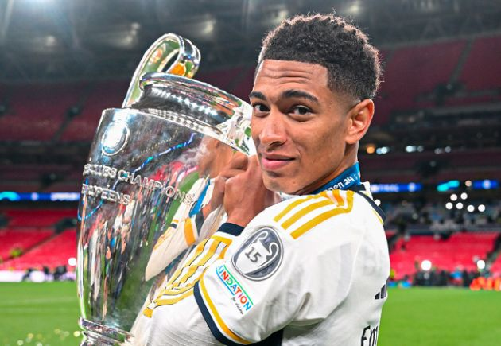
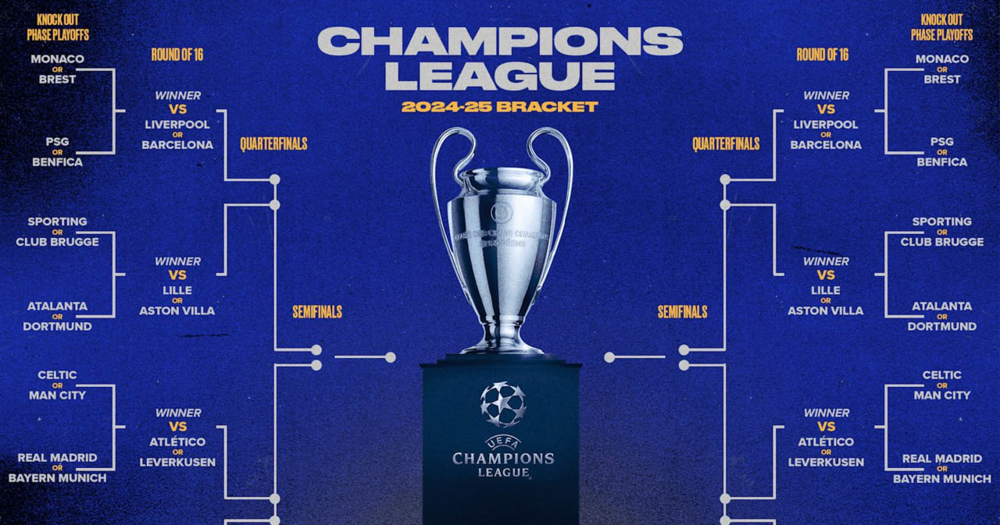

Echipa pare să aibă un moral bun și o atmosferă pozitivă, dar trebuie să depună mai mult efort pentru a ajunge la nivelul dorit..

Santiago Bernabéu este un stadion emblematic, cu o istorie bogată și o semnificație profundă pentru fanii Real Madrid.

Jude Bellingham este un tânăr fotbalist englez, care joacă pe postul de mijlocaș.

Echipele sunt împărțite în grupe de câte patru. Fiecare echipă joacă cu celelalte din grupă de două ori (tur și retur).